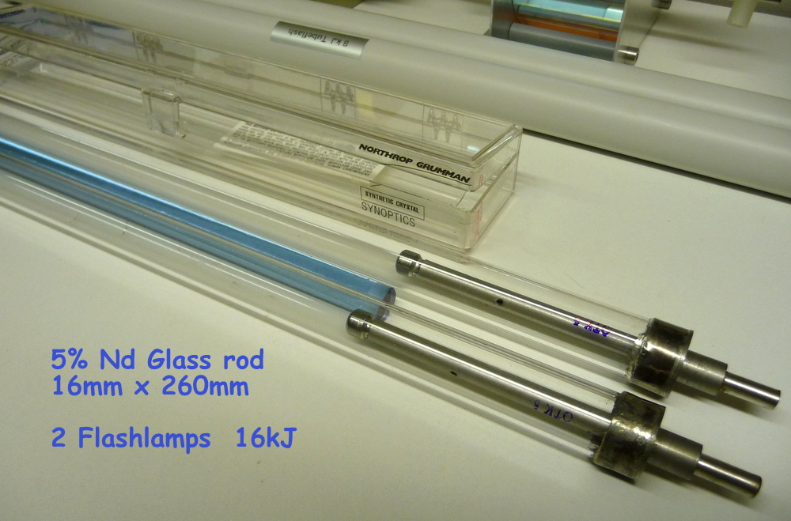
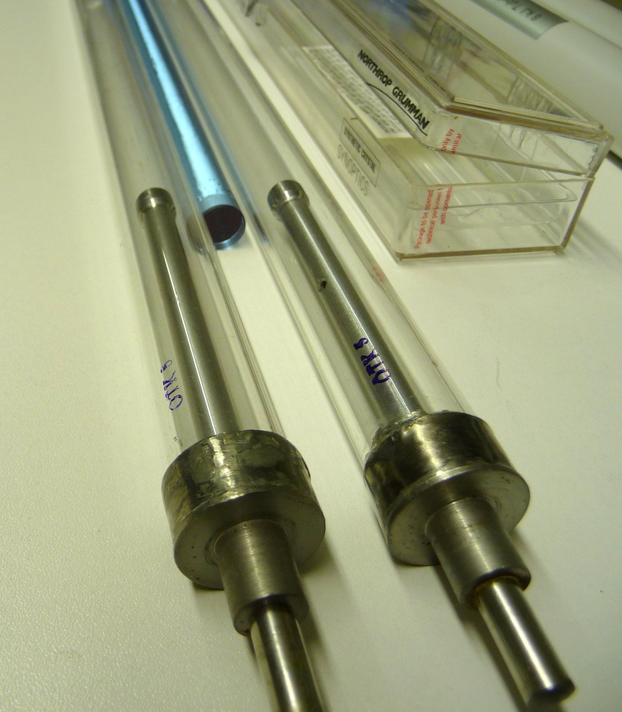
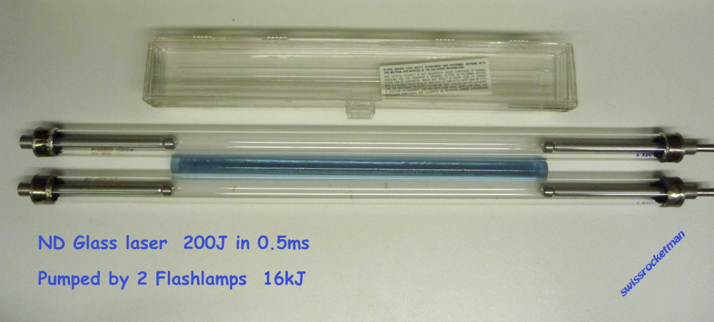

Laser glass with neodymium pumped by 2 linear flash tubes of 8000 J each. The reflector I will make it with 2 coaxial quartz tubes that will be filled with barium sulfate or magnesium oxide.
The Russian-made glass of Neodymium contains 5% of Nd2O3 nodymium oxide .
The 2 Russian-made flash tubes also deliver each of 8000 Joules flashes, ie 16kJ in 800 microseconds.
The diffuse reflector is coupled to the nearest 2 flash tubes.
The bar is cooled by circulating deionized water containing a UV converter in blue radiation.
he absorption spectrum of the trivalent ion of Nd+3 is between 350 and 900nm which perfectly matches the pumping by xenon flash tubes.
The energy stored in the 1.06 micron transition is very large for the glasses doped with the neodymium thus adapted to extract from great energy.
The advantage of the nodymium-doped glass is that it has a stimulated emission cross-section that is not too large to limit spontaneous emission amplification (ASE), which is the problem of most lasers
(YAG, ruby, sapphire titanium)


The 2 flash tubes have an arc length of 260mm and a diameter of 19.5 / 17.5mm.
The energy of explosion for a discharge of 300uS = 2500J
500us = 10kJ 1 ms = 13kJ 2ms = 25 kJ 10ms = 50 kJ
To have a life of 1000 discharge it is necessary to be at 50% of the energy of explosion !

During the discharge in the xenon tube, the trivalent neodymium ion absorbs the light energy emitted by the flash on about 17 discrete lines between 350 and 900 nm. The excited atom relaxes by a radiative or multi-phonon transition on the 4F3/2 transition in 4I15/2 to 1.8 micron,or on 4I13/2 to 1,35 micron or on 4I11/2 to 1,06 micron or on 4I9/2 to 0.88um this last line is resonant, ie it emits and absorbs at the same time!
The 1.8um and 1.35um line is not detected due to the absorption of the glass matrix.
The radiative life of state 4I11/2 is 1.25ns!